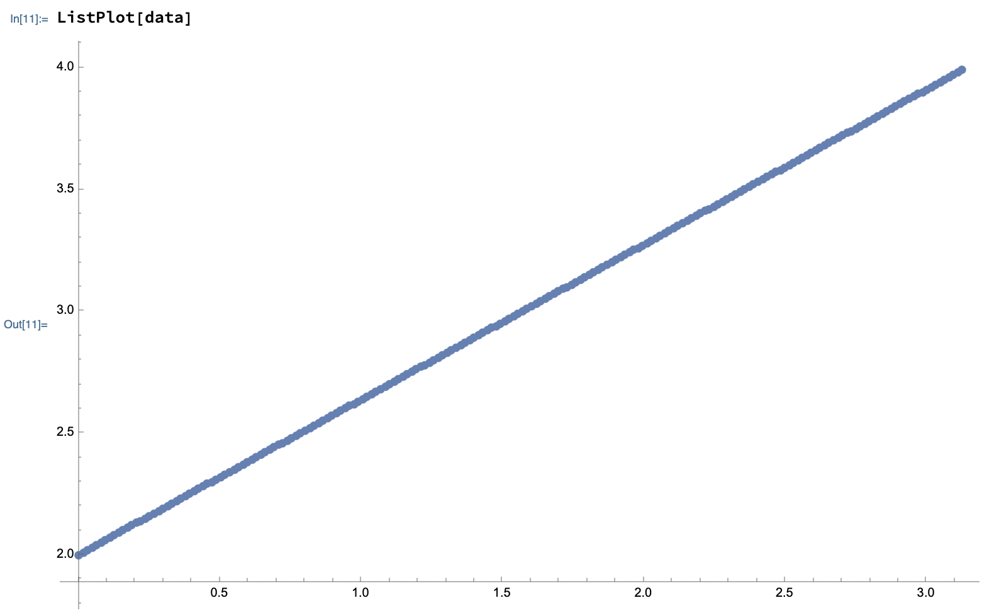

We talk about semicircles, but it's easier to visualize disk and sectors that cover it.
If we throw n random semicircles, what is the probability that the circle is covered?
Consider any point \(p\) on the circle. When we throw a random semicircle, \(p\) is not covered with probability \(\frac{1}{2}\). After \(n\) throws, the point is not covered with probability \(\frac{1}{2^n}\). But \(n\) semicircles split the circle into \(2n\) regions. If any point of the region is not covered, the the whole region is not covered. Hence, the probability that the circle is not completely covered is \(2n \frac{1}{2^n} = \frac{n}{2^{n-1}}\). This formula works for values \(n \ge 1\)
let f = (n) => n / Math.pow(2, n - 1);
function approxUncovered(n, Q) {
let uncovered = 0;
for (let i = 0; i < Q; i++) {
fullDiskCovered(generateNAngles(n)) || uncovered++;
}
return uncovered / Q;
}
| n | Formula | Experiment |
|---|
If \(f(n)\) is a probability of being not fully covered after \(n\) throws, then probability of being covered is \(1-f(n)\). However, this means that the circle could have been covered after any of the throws. Instead, we are interested in knowing the probability of the circle being covered after exactly \(n\) throws. To find this, we observe that \(g(n)=f(n-1)-f(n)\), i.e. it's precisely the drop of the probability of remaining uncovered. Then \( \displaystyle E[X] = \sum_{X=0}^{\infty} X*g(X) = \sum_{X=0}^{\infty} X*(f(X-1)-f(X))\).
So have \(g(n) = f(n-1) - f(n) = \frac{n-1}{2^(n-2)} - \frac{n}{2^n} = \frac{n-2}{2^n}\). This formula works for \( n \ge 2\). In addition we define \(g(0)=0, g(1)=0\) by common sense (impossible to cover the circle with 0 or 1 semicircles).
As a sanity check, \( \displaystyle \sum_{n=0}^{\infty}g(n) = 1 \)
Finally, the expected number of throws is then \( \displaystyle E[X] = \sum_{X=0}^{\infty} X*g(X) = \sum_{X=3}^{\infty} \frac{X(X-2)}{2^{X-1}} = 5\)
| Formula | Experiment |
|---|
We can model the process via Markov chain. We have a state \(\mu(\alpha)\) for \( \forall\, \alpha \in [0, 2\pi] \).
From each state \(\mu(\alpha)\) we have 3 possibilities:
There are some special states:
Finally we can write out a recurrent equation for the expected number of steps:
TODO: solve analytically
function markovChainIntegral() {
const N = 10000;
const alphas = Array.from({ length: N }, (_, i) => i * Math.PI / (N - 1));
const da = alphas[1] - alphas[0];
const h = new Array(N).fill(0);
function s(alpha) {
return (Math.PI - alpha) / (2 * Math.PI);
}
for (let i = 0; i < N; i++) {
const alpha = alphas[i];
if (i === 0) {
h[i] = 1 / (1 - s(alpha));
} else {
// Trapezoidal approximation of integral
let integral = 0;
for (let j = 0; j < i; j++) {
integral += h[j];
}
integral *= da;
h[i] = (1 + (1 / Math.PI) * integral) / (1 - s(alpha));
}
}
// h[N-1] is h(pi).
return 1 + h[N - 1];
}The solution is then given by markovChainIntegral():
I haven't able to solve for \(phi\) strictly analytically, but just looking at the chart might help here.
Clearly \(phi\) is a linear function, \(phi(x) = 2 + \frac{2x}{\pi}\ , x \in (0, \pi) \)
Note that the chart doesn't represent some additional semantic knowledge we have, namely:
To verify this, let's plot an average number of throws to be taken when the remaining uncovered angle is \(\alpha\).
| \(\alpha\) | Formula | Experiment |
|---|
© Copyright 2025, Iaroslav Tymchenko